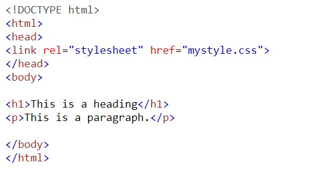
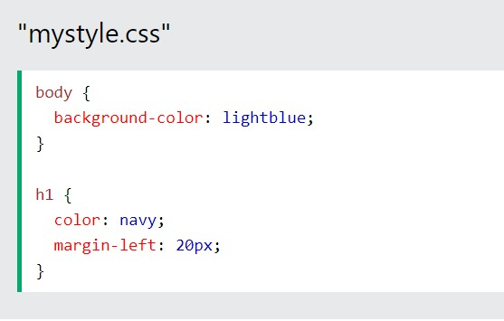
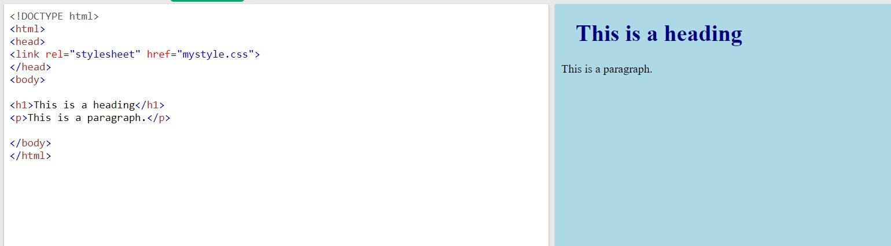

an external style sheet, you can change the look of an entire website by changing just one file!
Each HTML page must include a reference to the external style sheet file inside the element, inside the head section.

An external style sheet can be written in any text editor, and must be saved with a .css extension.
The external .css file should not contain any HTML tags.
Here is how the "mystyle.css" file looks:

Example:

If you want to read or learn more click on read more read More